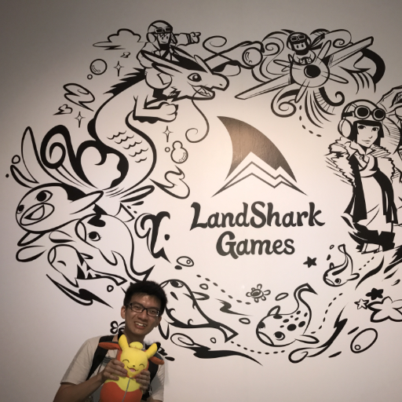
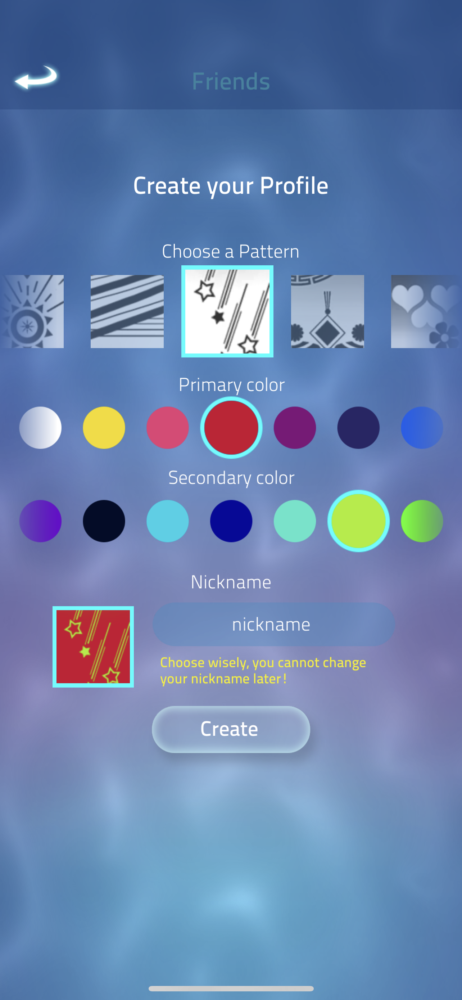

Work Experience 
I feel privileged to have spent almost 2 years accumulative working at LandShark Games Pte. Ltd. I have learnt much things from the senior programmers there and have also benefitted from many of Paul's (the co-founder) insights in the way they run the business.

During my time there, I was given the opportunity to work on many different kinds of features. From front end UI for a new profile system, to implementing the main new gameplay feature of the dragons inclusive of animation programming. And even dealing with some backend side systems for file updates and CDN versioning.
I was able to work on the original Zen Koi on a maintenance role, followed by working on Zen Koi 2's big new dragons gameplay feature. I was also given the chance to work on the new IP Grifford, which was announced in October 2022 (more on this in the future as the game releases). I am very proud of the work done with the team, our Zen Koi line of products average 4.8 / 5 ratings on both Apple App and Google Play Stores, even receiving various awards and features over the years.
Suffice to say, I was deeply enriched by the multitude of tasks and variety of programming challenges presented to me. Below is a more detailed list of what I have been able to work on:
- Designed and built a reusable client-server caching system
- Established Unity iOS build pipelines, writing various tools and plugins
- Developed new player profile system, working on both backend & frontend
- Implemented gameplay features for upcoming new IP: Grifford
- Worked with art team to enhance 3D animation pipeline
- Helped establish tools for the new 3D pipelines in the company
- Provided update support for current IPs, increasing product stability
- Worked on many other systems including asset management enhancements, debug tools and environments, new gameplay features for new IPs, etc.